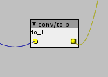

Hello 
I need a little help with a simple coding thing. I'd like to convert a bipolar fractional to a boolean. I have patched this up with factory objects:

It takes in a bipolar fractional... And it sends out a boolean. But when I look inside the object, I only see this:
outlet_o= inlet_i;
It seems like it is the outlets and inlets that converts the signal to boolean, not the code inside the object.
My question is: How would I write that in code, the conversion from fractional to boolean?
Thanks, Jaffa